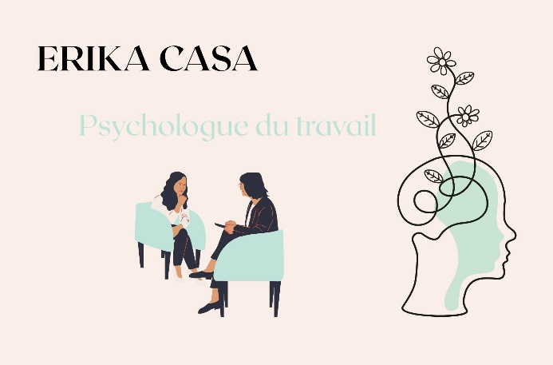

Stress & surcharge mentale
Identifier les facteurs de tension, comprendre leurs effets et retrouver des repères plus soutenables.
Prendre rendez-vousStress, burnout, envie de changer de voie ou recherche d'emploi avec un trouble du spectre de l'autisme : je vous accompagne avec bienveillance, de façon concrète et à votre rythme.
Chaque accompagnement est personnalisé selon votre situation, vos besoins et votre parcours.
Identifier les facteurs de tension, comprendre leurs effets et retrouver des repères plus soutenables.
Prendre rendez-vousMettre des mots sur l'épuisement, reconnaître les signaux d'alerte et reconstruire un équilibre.
Reconnaître les signesFaire le point sur votre parcours, clarifier vos priorités et envisager une évolution qui a plus de sens.
En savoir plusComprendre les difficultés rencontrées dans votre environnement professionnel et trouver des ajustements adaptés.
Prendre rendez-vousUn accompagnement individuel et des cours collectifs pour adultes autistes : projet professionnel, recherche d'emploi, entretiens, confiance en soi. Avec une double expertise de psychologue du travail et de job coach.
Découvrir l'accompagnementPar téléphone, e-mail ou via le formulaire. Quelques mots sur votre situation suffisent.
Nous faisons le point ensemble sur votre demande, vos besoins et vos objectifs.
Nous avançons pas à pas, à votre rythme, avec des outils concrets adaptés à votre situation.

Je suis psychologue du travail, spécialisée dans l'accompagnement des personnes (jeunes et adultes) dans leur parcours professionnel, avec une attention particulière aux personnes ayant un trouble du spectre de l'autisme.
Mon approche est bienveillante, concrète et centrée sur vos forces, dans le respect de votre rythme et de vos besoins.
Chaque parcours est unique, et mérite un accompagnement sur mesure.
Des ateliers en petit groupe pour adultes autistes : habiletés sociales, fonctions exécutives, gestion émotionnelle et démarches professionnelles.
Par téléphone au 0472 37 67 85, par e-mail à erika.casa.pro@hotmail.com, ou via le formulaire ci-dessous. Vous recevrez une réponse pour convenir d'un moment.
Grand'Rue 56, 7170 Manage, facilement accessible depuis La Louvière, Seneffe, Morlanwelz et Binche.
Oui. La psychologue est tenue au secret professionnel : ce que vous partagez reste entre vous.
[À compléter par Erika : tarif, durée de la séance, éventuels remboursements par la mutuelle.]
Les cours collectifs s'adressent aux adultes disposant d'une reconnaissance de handicap. N'hésitez pas à prendre contact pour en parler : nous verrons ensemble ce qui correspond à votre situation.
Contactez-moi pour échanger sur votre demande et convenir d'un rendez-vous.